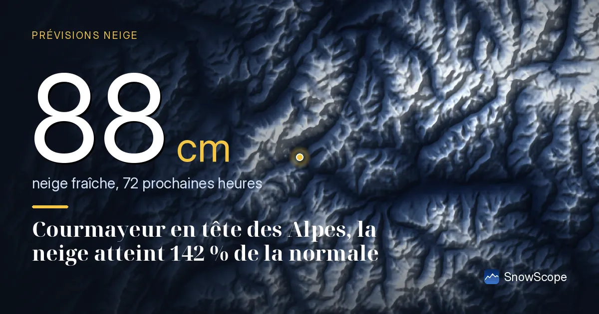
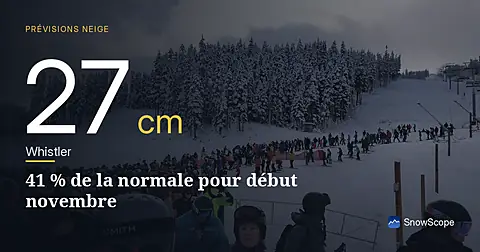

Courmayeur en tête des Alpes, la neige atteint 142 % de la normale
Courmayeur recevra le plus de neige fraîche des Alpes d'ici 72 heures, selon notre pronostic de 88 cm, là où l'épaisseur mesurée est déjà 42 % au-dessus de la normale pour novembre. La force en début de saison signifie que la neige qui arrive s'accumulera sur une base solide plutôt que sur une couverture mince.
Consultez les prévisions neige en temps réel pour Courmayeur sur l'application SnowScopeHauteurs de neige, alertes poudreuse et carte 3D, gratuitement.
Classement des Alpes d'Europe et force en début de saison
Courmayeur est en tête du pronostic des Alpes pour les 72 heures à venir avec 88 cm de neige fraîche en altitude, mais l'histoire plus importante est la force en début de saison. L'épaisseur de neige mesurée à Courmayeur est de 27 cm, soit 42 % au-dessus de la moyenne pour cette période selon les hivers passés—l'épaisseur typique ici est de 19 cm. Cela a de l'importance pour les skieurs : quand la neige tombe sur une base existante plutôt que sur le sol nu, elle s'accumule plus vite et persiste plus longtemps.
Les Grands Montets suit le classement du pronostic avec 79 cm, et La Thuile Ski en ajoute 78 cm. Ces chiffres suggèrent que les Alpes continentales autour du massif du Mont-Blanc captureront les plus fortes chutes de neige au cours des 72 heures à venir. La fenêtre de 24 heures jusqu'au 16 novembre apporte 9-11 cm aux trois premiers domaines, l'essentiel arrivant entre le 16 et le 18 novembre.
| # | Station | Région | +24 h | +72 h | Limite pluie-neige |
|---|---|---|---|---|---|
| 1 | Courmayeur | Alpes · Italie | 10 cm | 88 cm | 2 500 m |
| 2 | Les Grands Montets | Alpes · France | 11 cm | 79 cm | 2 100 m |
| 3 | La Thuile ski | Alpes · France / Italie | 9 cm | 78 cm | 2 200 m |
| 4 | Les Arcs | Alpes · France | 9 cm | 77 cm | 2 100 m |
| 5 | Orelle | Alpes · France | 8 cm | 77 cm | 2 500 m |
| 6 | Glacier 3000 | Alpes · Suisse | 13 cm | 73 cm | 2 400 m |
| 7 | Vichères-Bavon | Alpes · Suisse | 9 cm | 73 cm | 2 400 m |
| 8 | Sainte-Foy Tarentaise | Alpes · France | 7 cm | 71 cm | 2 000 m |
| # | Station | Région | +24 h | +72 h | Limite pluie-neige |
|---|---|---|---|---|---|
| 1 | Kingvale | Ouest américain · États-Unis | 10 in (25 cm) | 17 in (44 cm) | – |
| 2 | Mt. Shasta Ski Park | Ouest américain · États-Unis | 2 in (4 cm) | 16 in (40 cm) | 4 300 ft (1 300 m) |
| 3 | Bear Valley | Ouest américain · États-Unis | 7 in (19 cm) | 14 in (36 cm) | 5 200 ft (1 600 m) |
| 4 | Donner Ski Ranch | Ouest américain · États-Unis | 7 in (19 cm) | 14 in (36 cm) | 5 200 ft (1 600 m) |
| 5 | Sierra-at-Tahoe | Ouest américain · États-Unis | 7 in (18 cm) | 14 in (35 cm) | 5 600 ft (1 700 m) |
| 6 | Kirkwood | Ouest américain · États-Unis | 6 in (16 cm) | 13 in (34 cm) | 5 600 ft (1 700 m) |
| 7 | Palisades Tahoe Alpine Meadows | Ouest américain · États-Unis | 7 in (17 cm) | 13 in (32 cm) | 5 200 ft (1 600 m) |
| 8 | Homewood | Ouest américain · États-Unis | 6 in (16 cm) | 12 in (30 cm) | – |
| # | Station | Région | +24 h | +72 h | Limite pluie-neige |
|---|---|---|---|---|---|
| 1 | Sasquatch | Ouest canadien · Canada | 17 cm | 17 cm | 900 m |
| 2 | Grouse Mountain | Ouest canadien · Canada | 16 cm | 17 cm | 900 m |
| 3 | Cypress Mountain | Ouest canadien · Canada | 13 cm | 14 cm | 900 m |
| 4 | Whistler Blackcomb | Ouest canadien · Canada | 13 cm | 13 cm | 900 m |
| 5 | Mt Seymour | Ouest canadien · Canada | 12 cm | 13 cm | 900 m |
| 6 | Banff Sunshine Village | Ouest canadien · Canada | 9 cm | 12 cm | 1 300 m |
| 7 | Ski Callaghan | Ouest canadien · Canada | 11 cm | 11 cm | 700 m |
| 8 | Mount Washington Alpine Resort | Ouest canadien · Canada | 10 cm | 11 cm | 800 m |

Classement des pronostics pour l'Amérique du Nord et le Canada
L'Amérique du Nord présente un tableau différent. Dans l'ouest américain, Kingvale recevra le plus de neige fraîche au cours des 72 prochaines heures : 44 cm (17 in) est exceptionnel pour mi-novembre. Mt. Shasta Ski Park et Bear Valley suivent avec 40 cm (16 in) et 36 cm (14 in) respectivement, tous pronostiqués en haute altitude.
Le Canada occidental présente un contraste : Sasquatch et Grouse Mountain recevront chacun 17 cm au cours des 72 prochaines heures, mais la plupart de cette neige arrive dans les 24 prochaines heures plutôt que répartie sur trois jours. Le moment est important—les domaines canadiens voient une poussée nette de neige concentrée en un événement, tandis que les domaines de la Sierra américaine bénéficient d'une fenêtre plus longue pour l'accumulation.

Pourquoi l'épaisseur en début de saison façonne la façon dont la neige se comporte
Le chiffre de 142 % à Courmayeur n'est pas qu'une curiosité ; il reflète comment les montagnes en début de saison créent de la valeur à partir de chaque nouvelle tempête. Ici en novembre, avant que le froid intense ne s'installe, la neige qui arrive est souvent mouillée et dense. Quand elle tombe sur une base déjà 8 cm plus profonde que la moyenne, la compression et le tassement jouent en faveur du skieur : la neige fraîche s'attache à la base existante, les rochers restent enfouis, et le résultat : un terrain plus rapidement skiable.
À des altitudes plus basses dans les Alpes ou au Canada, où la neige de novembre est plus mince que la moyenne, la neige mouillée qui arrive se compresse à la moitié de sa profondeur en quelques jours. L'épaisseur précoce est une assurance contre l'érosion éolienne et contre la déception d'une couverture mince à mi-décembre. C'est l'intérêt d'une belle ouverture de saison.
Altitude, limite de neige et où la neige tient
La limite de neige—l'altitude où la pluie se transforme en neige—se situe entre 2 000 m et 2 500 m des Alpes d'ici 72 heures. Les Grands Montets montre la limite de neige la plus basse à 2 100 m ; celle de Courmayeur est plus élevée à 2 500 m. Cela signifie qu'au-dessus de 2 100 m aux Grands Montets, les 79 cm tomberont sous forme de neige. En dessous, les précipitations sont de la pluie ou de la neige mouillée.
Dans l'ouest américain, les limites de neige sont plus basses et variables, de 1 300 m à 1 700 m selon la montagne, offrant plus de terrain où la neige fraîche s'accumulera. Connaissez la limite de neige de votre montagne avant de vous engager sur des pistes basses ou en hors-piste. Une légère augmentation de température entre le 16 et le 17 novembre pourrait décaler la limite de neige de 300 m plus haut, réduisant considérablement l'épaisseur de neige fraîche.
Neige de début de saison : consolidation et fenêtre
La neige fraîche pronostiquée en mi-novembre est généralement mouillée et se tasse rapidement. Un pronostic de 88 cm ne se traduit pas par 88 cm de poudre profonde le 17 novembre ; le tassement et la compression à des températures plus chaudes réduiront l'épaisseur d'un tiers ou plus en quelques jours. La vraie valeur est la construction de la base : la neige qui arrive couvre les rochers, remplit les creux et élève le socle pour l'hiver à venir.
Cette fenêtre de pronostic (16-18 novembre) est un moment clé pour construire ce socle. Skiez rapidement, dans les 48 heures suivant les chutes les plus fortes, avant que la neige ne se lie et durcisse avec une texture printanière. Les rochers et la couverture mince restent un danger en dessous de 2 000 m même avec cette neige qui arrive. Consultez le bulletin d'avalanche officiel de la région avant de vous aventurer en hors-piste.
Conseils aux skieurs
- Dirigez-vous vers les terrains élevés au-dessus de 2 000-2 500 m dans les Alpes d'Europe si vous voulez skier de la neige fraîche tout au long de la fenêtre de pronostic ; en dessous, la pluie est probable.
- Kingvale et Bear Valley attireront les foules dans l'ouest américain pour la neige fraîche ; attendez-vous à du monde si les conditions persistent jusqu'au 17 novembre.
- Au Canada occidental, surveillez attentivement les 24 prochaines heures ; la plupart de la neige arrive alors, avec peu de suivi après le 16 novembre.
- La neige en début de saison se consolide en quelques jours ; n'attendez pas pour skier de la neige fraîche si vous avez un accès sûr.
- Inspectez soigneusement le terrain pour les rochers et la couverture mince en dessous de 2 000 m même après cette neige fraîche, et consultez le bulletin d'avalanche officiel si vous allez en hors-piste.
À propos de ces chiffres
Les hauteurs de neige des stations sont la neige la plus épaisse sur le haut du domaine, d'après le modèle de neige SnowScope (environ 1 km, calcul du 15 novembre) ; ce sont des estimations pour une zone, pas une mesure en un point. Les valeurs des stations de mesure sont mesurées à la date indiquée. Les prévisions peuvent changer. Consultez toujours le bulletin d'avalanche officiel avant le hors-piste.
Bulletins d'avalanche officiels: EAWS (Europe) · avalanche.org (US) · Avalanche Canada
Citer ce bulletin
Pour la recherche, l'enseignement ou la presse : chiffres et graphiques réutilisables librement sous CC BY 4.0 avec cette citation.
SnowScope (2026), Courmayeur en tête des Alpes, la neige atteint 142 % de la normale, https://snowscope.app/blog/fr/2026/11/where-most-snow-falls-next-72-hours-15-november-2026.html, consulté le 2026-11-15
SnowScope (Atlas Labs). (2026, November 15). Courmayeur en tête des Alpes, la neige atteint 142 % de la normale. SnowScope snow reports. https://snowscope.app/blog/fr/2026/11/where-most-snow-falls-next-72-hours-15-november-2026.html
BibTeX
@misc{snowscope2026wheremostsnowfallsnext72,
author = {{SnowScope (Atlas Labs)}},
title = {Courmayeur en tête des Alpes, la neige atteint 142 % de la normale},
year = {2026},
month = nov,
howpublished = {\url{https://snowscope.app/blog/fr/2026/11/where-most-snow-falls-next-72-hours-15-november-2026.html}},
note = {Published 2026-11-15 16:33 UTC; accessed 2026-11-15}
}· CC BY 4.0 · Méthodes, données et outils →
Courmayeur : neige et température selon l'altitude, cet hiver vs l'hiver dernier (outils) →
Suivre Courmayeur
Gratuit : un message quand la neige arrive, et la météo chaque matin.
Autres bulletins neige

Whistler Blackcomb a gagné 24 cm en une semaine pour atteindre 50 cm total ; 62 cm supplémentaires prévus en 72 heures alors que des tempêtes majeures frappent les montagnes (données du 8 novembre).

Whistler Blackcomb affiche 27 cm le 5 novembre, soit seulement 41 % de la normale pour cette date. Un système majeur apporte 22 cm de neige dans les 24 prochaines heures.

Prévision Whistler Blackcomb : 74 cm en 72 heures ; les semaines 13, 12, 11 apportent les neiges les plus abondantes de l'année historiquement. Prévision du 5 novembre.